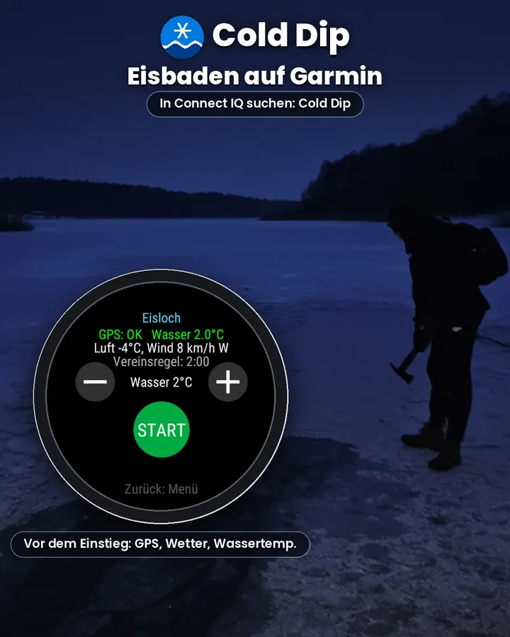
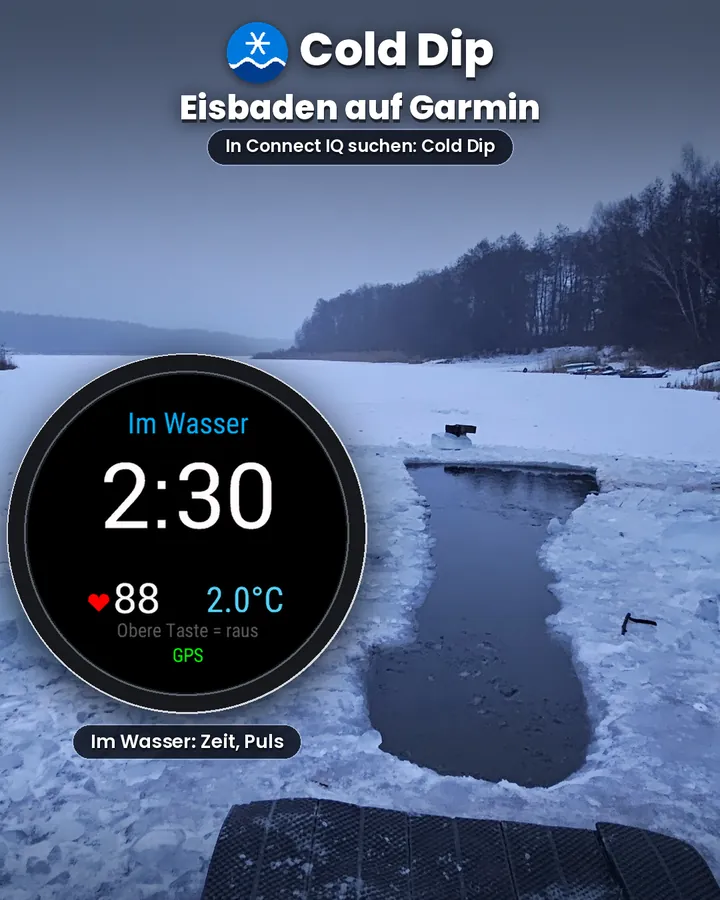
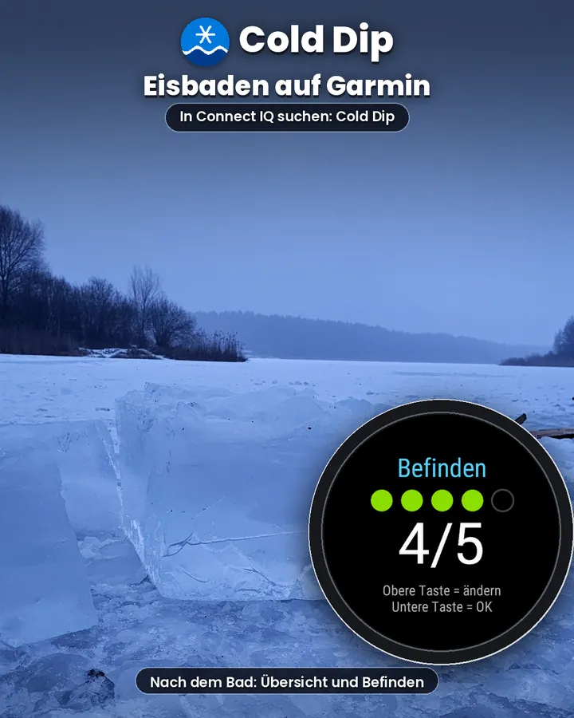
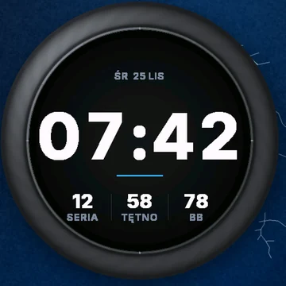
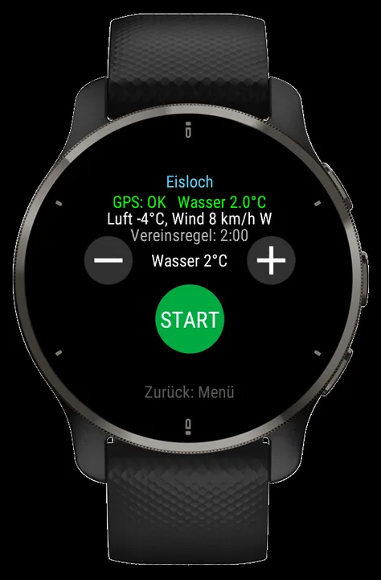
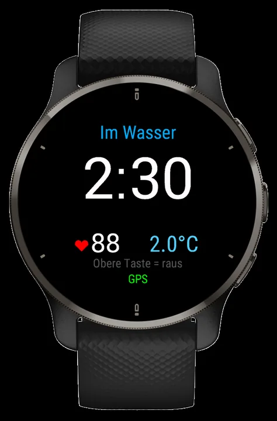
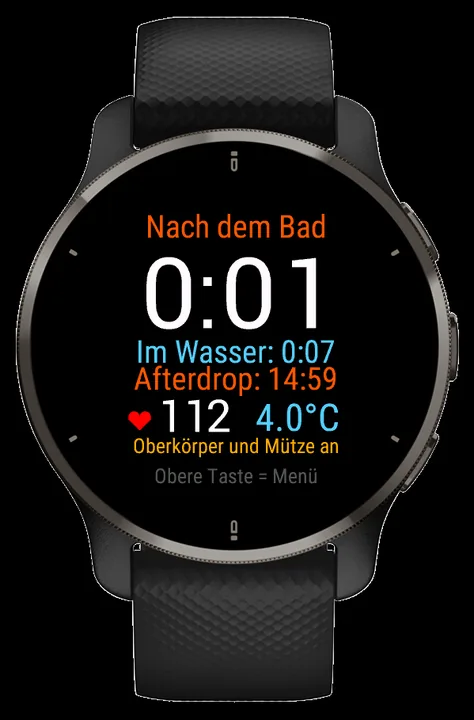

Mors – tarcza
Animiertes Walross-Zifferblatt fürs Eisbaden
3,99 USD 24 Stunden kostenlos testen
Demnächst im Connect IQ Store Im Connect IQ Store öffnen Mehr dazu
Auf der Uhr heißt die App Eisbaden.
Kaltbaden und Eisschwimmen richtig aufzeichnen — nicht als Schwimmen.
Oder suche in der Connect IQ App auf dem Handy nach „Cold Dip“.



Systeme
Die App kannst du heute auf Garmin-Uhren herunterladen. Die Amazfit-Version (Zepp OS) ist gerade in der Prüfung für den Zepp App Store. Versionen für Huawei, Wear OS und Apple Watch sind in Vorbereitung.
Zifferblätter
Walross-Zifferblätter fürs Eisbaden. Mors – tarcza reagiert auf das Wetter. Mors Level steigt mit deinen Saisonminuten. Dip Goals und Afterdrop kommen bald.
Animiertes Walross-Zifferblatt fürs Eisbaden
3,99 USD 24 Stunden kostenlos testen
Demnächst im Connect IQ Store Im Connect IQ Store öffnen Mehr dazu
Gamifiziertes Walross-Zifferblatt fürs Eisbaden
2,99 USD 7 Tage kostenlos testen
Demnächst im Connect IQ Store Im Connect IQ Store öffnen Mehr dazu

Zielringe für wöchentliche Eisbäder, Saisonminuten und deine Serie, plus Wasser- und Lufttemperatur, Body Battery und Puls. Vier Themes.

Ein kostenloses Garmin-Zifferblatt mit großer Uhrzeit und 3 Datenfeldern. Es sperrt nie. Optional schaltet Afterdrop Pro Cold-Dip-Felder, Lufttemperatur, Sonnenauf- und -untergang und 4 zusätzliche Themes frei.
Animiertes Walross-Zifferblatt fürs Eisbaden
Das Walross reagiert auf das Wetter: Wellen bei schönem Wetter, Mütze bei Frost, Schnee abschütteln und ein Sprung ins Eisloch, wenn es Zeit zum Eisbaden ist. Uhrzeit, Datum, Lufttemperatur, Wetter, Herzfrequenz, Schritte und Akku. Die Animation läuft beim Aufwachen der Uhr — nie im Always-on-Modus.
3,99 USD einmalig, zuzüglich MwSt., wo sie anfällt
Auf AMOLED-Uhren bewegt sich das Walross, wenn du die Uhr hebst — nie im Always-on-Modus.
Vollfarbige Animation auf AMOLED-Uhren wie Venu 2, 2 Plus, 3 und 4, vívoactive 5 und 6, Forerunner 165, 170, 265, 570, 965 und 970, Fenix 8 und 9 (AMOLED), Epix 2, Descent Mk3, D2 Mach, Approach S70 und S72, Instinct 3 AMOLED und MARQ 2 und 3.
Dieses Zifferblatt gibt es nicht für MIP-Uhren und Geräte mit weniger Speicher, etwa Fenix 5 Plus, Fenix 6 und 7, Fenix Solar, Forerunner 245, 255, 745, 945 und 955, Enduro, Descent Mk2, vívoactive 4, Venu 1 und MARQ der ersten Generation. Diese Displays können die vollfarbige Animation nicht zeigen.
Gamifiziertes Walross-Zifferblatt fürs Eisbaden
Dein Walross-Begleiter steigt über 5 Stufen auf, während deine Eisbademinuten in der Saison wachsen — live aus der kostenlosen App Cold Dip. Im Winter ein dampfendes Eisloch, im Sommer ein Strand, dazu ein Serienabzeichen, Wassertemperatur, Herzfrequenz, Akku und ein reduziertes Always-on-Display. Die Aufwach-Animation läuft beim Aufwachen der Uhr — nie im Always-on-Modus.
2,99 USD einmalig, zuzüglich MwSt., wo sie anfällt · 7 Tage kostenlos testen
Für den Aufstieg mit live Minuten, Serie und Wassertemperatur installiere die kostenlose App Cold Dip. Ohne sie zeigen diese Felder einfach Uhrdaten.
NEULING 1/5


5 Stufen
1/5
0–29 Min. in dieser Saison
2/5
30–119 Min. in dieser Saison
3/5
120–299 Min. in dieser Saison
4/5
300–599 Min. in dieser Saison
5/5
600+ Min. in dieser Saison


Vollfarbige Animation auf 51 AMOLED-Uhren wie Venu 2, 2 Plus, 3 und 4, vívoactive 5 und 6, Forerunner 165, 170, 265, 570, 965 und 970, Fenix 8 und 9 (AMOLED), Epix 2, Descent Mk3, D2 Mach, Approach S70 und S72, Instinct 3 AMOLED sowie MARQ 2 und 3. Always-on nutzt sehr wenige leuchtende Pixel.
Ein klares, statisches Zifferblatt auf 19 MIP-Uhren wie Fenix 7, Fenix 8 Solar, Forerunner 255 und 955 sowie Enduro 3 und 4. Insgesamt unterstützt Mors Level 70 Garmin-Uhren, in 11 Sprachen.
Fürs Kaltbaden gemacht, nicht fürs Schwimmbad. Du entscheidest die ganze Zeit selbst.
Die obere Taste wechselt die Phasen. Die Zeit im Wasser läuft einfach weiter — die App sagt dir nie, dass du raussollst. Das entscheidest du. Deine letzte Zeit ist nur ein Orientierungswert, kein Ziel, das du schlagen musst.
Die Herzfrequenz wird durchgehend aufgezeichnet. Die Wassertemperatur gibst du manuell ein — sie wird mit der Aktivität gespeichert.
Lufttemperatur, Gefühlte Temperatur und Wind — aus dem Garmin-Wetter auf deinem Handy.
Die Stelle deines Bades wird gespeichert und in Garmin Connect auf einer Karte gezeigt.
Nach jedem Bad eine kurze Bewertung, wie du dich fühlst. Dazu Spitzen- und Erholungsherzfrequenz sowie Body Battery und Stress vor dem Einstieg.
Alles wird in Garmin Connect als eigene Aktivität gespeichert, nicht als Schwimmen.
Englisch, Polnisch, Deutsch, Tschechisch, Slowakisch, Finnisch, Norwegisch, Schwedisch, Spanisch, Russisch und Ukrainisch. Die App stellt sich automatisch auf die Uhrensprache ein.
Forerunner, Fenix, Epix, Enduro, Venu, Vivoactive, Instinct 2 / 3 / E / Crossover und weitere. Nicht unterstützt: sehr alte Uhren wie die Forerunner 920XT (Connect IQ 1.x).
Optionale Extras zur kostenlosen App — du zahlst nur, wenn du sie willst
Die App, die du schon nutzt, bleibt kostenlos. Pro ist für alle, die aus der Saison mehr herausholen wollen: neue Trainingswege, einen klareren Blick auf den Fortschritt und einen einfacheren Bildschirm im Wasser.
4,99 USD einmalig, zuzüglich MwSt., wo sie anfällt · 7 Tage kostenlos testen
Pro 7 Tage kostenlos testen — dann 4,99 USD Update im Connect IQ Store
Eine Sauna mit der Uhr am Handgelenk, eine kalte Dusche, ein geführter Kontrast aus Sauna und Wasser oder eine kurze Atemvorbereitung vor dem Einstieg. Einen Phasenwechsel bestätigst du immer mit dem Knopf.
Benannte Phasen und Hinweise zu den Zeiten, die du wählst, zusätzlich zu den kostenlosen Minuten-, Halbzeit- und 3-2-1-Alarmen, die unverändert bleiben.
Gesamtzeit im Wasser und in der Sauna, weitere Rekorde und Verlauf bis 200 Sitzungen. Die kostenlose Liste zeigt weiter die letzten 30.
Halte eine Serie von 7, 14 oder 30 Tagen und verdiene Abzeichen für 10, 25, 50 und 100 Sitzungen, das erste Bad unter 5°C, eine Kontrastsitzung und Sauna plus Bad in einem Durchgang.
Ein großer Timer, eine Seite für Puls und Runden sowie Themes (Eis, dunkel, starker Kontrast, Sauna). Mit Auf und Ab wechselst du die Seite.
Ein großer Timer im Wasser, Wassertemperatur und Puls. Ein Knopf zum Starten und Stoppen. Keine zusätzlichen Menüs oder Bildschirme. Du schaltest ihn in den Einstellungen ein, sobald Pro freigeschaltet ist.
Ein Zeitvorschlag aus der Wassertemperatur nach einer üblichen Klubregel (ungefähr so viele Minuten wie °C, zwischen 0:30 und 5:00). Nur ein Hinweis: Die App beendet die Sitzung nie und behauptet nie, eine Zeit sei sicher.
Auf neueren Uhren kannst du einen Glance und Komplikationen anheften: Tages-Serie, Zeit des letzten Bads und Saisonminuten. Der Glance ist dort kostenlos. Komplikationen brauchen ein Zifferblatt, das App-Komplikationen unterstützt.
Nach dem Speichern zeigt eine einfache Karte Zeit, Temperatur, Befinden und Serie. Fotografiere den Bildschirm zum Teilen. Eine Historienliste bleibt auf der Uhr, und Garmin Connect erhält weiter die FIT-Aktivität. Es gibt keinen Cloud-Export und kein Instagram-Bild — Connect IQ kann selbst keine Fotos senden.
Nach dem Bad siehst du eine einfache Pulskurve, die Spitze sowie 1- und 2-Minuten-Erholungswerte. Nur ein Hinweis, kein medizinischer Rat.
Speichere einen Ort mit der letzten Wassertemperatur, die du dort erfasst hast. In der Nähe kann der Startbildschirm diesen Besuch zeigen. Das ist keine Live-Seetemperatur — Connect IQ hat keine solche API.
Wenn du die Uhr draußen lässt, damit sie nicht überhitzt, schalte die Option ein: Die App erwartet in der Sauna keinen Puls vom Handgelenk und kann danach eine Aufwärmphase starten. Aufwärmen kannst du nach dem Bad auch im Menü starten.
| Was enthalten ist | Kostenlos | Pro ⭐ PRO |
|---|---|---|
| Alles, was schon in Cold Dip 1.0.3 ist — vier Profile, Verlauf von 30, Rekorde, geführte Atmung, GPS und mehr | ✓ Ja | ✓ Ja |
| Sauna, Kontrast und neue Modi ⭐ PRO | — | ✓ Ja |
| Eigene Alarme im Wasser ⭐ PRO | — | ✓ Ja |
| Die ganze Saison im Blick ⭐ PRO | — | ✓ Ja |
| Abzeichen und Tages-Serien ⭐ PRO | — | ✓ Ja |
| Zusätzliche Bildschirme und Farbthemes ⭐ PRO | — | ✓ Ja |
| Einfacher Modus, gemacht für Handschuhe ⭐ PRO | — | ✓ Ja |
| Ein Zeit-Hinweis — kein Limit ⭐ PRO | — | ✓ Ja |
| Glance und Zifferblatt-Komplikationen (neuere Uhren) | Auf neueren Uhren | Auf neueren Uhren |
| Sitzungskarte und Historienliste ⭐ PRO | — | ✓ Ja |
| Puls- und Erholungskurve ⭐ PRO | — | ✓ Ja |
| Gespeicherte Orte mit letzter Wassertemperatur ⭐ PRO | — | ✓ Ja |
| Uhr außerhalb der Sauna und Aufwärmen ⭐ PRO | — | ✓ Ja |
| Preis | Kostenlos | 7 Tage testen, dann einmalig 4,99 USD |
Pro läuft auf neueren Garmin-Uhren mit Connect IQ 4 oder höher, darunter Venu 2 / 3 / 4, Venu Sq 2, Venu X1, vívoactive 5 / 6, Forerunner 165 / 170 / 255 / 265 / 570 / 955 / 965 / 970, fēnix 7 / 8 / 9, epix (Gen 2), Instinct 3 AMOLED, Descent Mk3, Enduro 3 / 4, Approach S50 / S70 / S72 und MARQ (Gen 2) / (Gen 3). Es läuft nicht auf älteren oder speicherärmeren Modellen wie fēnix 5 / 6, der ersten Venu, vívoactive 3 / 4, Forerunner 55 / 245 / 645 / 945, Instinct 2, Instinct 3 Solar oder Instinct E — die kostenlose App läuft dort weiter. Prüfe dein Modell in der Liste.
In Garmin Connect wird eine Sauna-Sitzung als Training oder Meditation gespeichert, weil Garmin keinen Aktivitätstyp „Sauna“ hat.
Der Zeit-Hinweis ist keine medizinische Beratung und bedeutet nicht, dass eine Sitzung sicher ist. Kaltes Wasser und Sauna bergen Risiken. Sprich mit einem Arzt, gehe nie allein und verlasse dich auf dein eigenes Urteil. Du bleibst die ganze Zeit in der Kontrolle.
Suche dein Modell. Die Liste umfasst die 133 Uhren in Cold Dip.
Sehr alte Uhren mit Connect IQ 1.x, etwa der Forerunner 920XT, können nicht unterstützt werden. Pro braucht eine neuere Uhr — suche dein Modell, um das zu prüfen.
So sieht Cold Dip auf verschiedenen Garmin-Displays aus.





Die letzten Versionen von Cold Dip.
Cold Dip Pro ist da. Alles aus 1.0.3 bleibt kostenlos. Pro ist optional: einmalig 4,99 USD, mit 7 Tagen zum Testen. Neue Modi: Sauna, kalte Dusche, geführter Kontrast und Atemvorbereitung; eigene Alarme und benannte Phasen im Wasser; Saisonstatistiken, Abzeichen und Tages-Serien (7 / 14 / 30); zusätzliche Bildschirme, Farbthemes und einfacher Modus.
133 Uhren, darunter Instinct 2, Instinct 2S, Instinct 2X, Instinct 3 Solar, Instinct E und Instinct Crossover, plus ein neues Schwarz-Weiß-Layout für MIP-Displays.
126 Uhren, darunter der Forerunner 55.
105 Uhren, darunter rechteckige Layouts für Venu X1 und Venu Sq 2.
Erste Veröffentlichung.
“Działa idealnie” (Funktioniert einwandfrei)
Über 10 Minuten bei 5°C — Wassertemperatur auf der Uhr, und alle Daten in Garmin Connect gespeichert.
Ein paar Dinge, die nach der Installation oft gefragt werden.
Installiere sie über die Connect IQ Store App auf dem Handy — nicht über Google Play oder den App Store. Auf der Uhr findest du Cold Dip (Eisbaden) in der Liste der Aktivitäten / Apps.
Im Profil „Eisloch“ stellst du sie auf dem Startbildschirm mit den Tasten − / + ein. In den anderen Profilen geht das über das Menü: „Wassertemp. manuell“. Wenn du im Wasser „--°C“ siehst, wurde die Temperatur noch nicht gesetzt.
Öffne die Aktivität, gehe zum Tab „Statistiken“ und scrolle zur Sektion „Connect IQ“. Dort findest du Herzfrequenz, Wassertemperatur, Wetter, Befinden und die Phasenzeiten. Die Kacheln auf dem Bildschirm „Überblick“ legt Garmin fest — die App kann sie nicht ändern.
Nein. Die Uhr kann die Körpertemperatur nicht messen. Der Sensor zeigt die Temperatur der Uhr selbst, beeinflusst von Haut und Luft. In Cold Dip gibst du die Wassertemperatur manuell ein.
Die Kalorien schätzt die Uhr anhand der Herzfrequenz, Cold Dip rechnet sie nicht selbst aus.
Kaltes Wasser ist ernst. Das sind allgemeine Sicherheitshinweise, keine medizinische Beratung. Du entscheidest, wann du hineingehst und wann du herauskommst.
Geh immer mit jemandem, der helfen kann, wenn etwas passiert, oder sorge dafür, dass dich jemand am Ufer im Blick hat.
Wenn du neu im kalten Wasser bist, gewöhne dich nach und nach daran, statt gleich lange in sehr kaltem Wasser zu bleiben.
Viele beginnen nur mit kurzer Zeit im Wasser und steigern sich langsam. Es gibt keine Zeit, die du „schaffen solltest“.
Verlass das Wasser, sobald du merkst, dass es reicht — starkes Zittern, Schmerz, Taubheit, Verwirrung oder einfach das Gefühl, dass es genug ist. Cold Dip sagt dir nie, dass du rausgehen sollst, und setzt keine Zielzeit. Deine letzte Zeit ist nur ein Anhaltspunkt.
Trockne dich ab und wärme dich so schnell wie möglich, wenn du aus dem Wasser kommst. Lege warme Kleidung bereit, bevor du hineingehst.
Nach dem Ausstieg kann die Körperkerntemperatur noch eine Weile weiter sinken, wenn kühleres Blut von Haut und Gliedmaßen zurückkehrt. Das wird oft Afterdrop genannt. Wärme dich weiter, lass dir Zeit und warte, bis du dich wirklich wohl fühlst, bevor du Auto fährst oder radelst.
Cold Dip ist eine Aufzeichnungs-App, kein Medizinprodukt, und gibt keine medizinische Beratung. Sie kann dir nicht sagen, ob kaltes Wasser für dich sicher ist. Bei einer Vorerkrankung, in der Schwangerschaft oder bei Unsicherheit sprich zuerst mit einer qualifizierten Fachperson.
Ein kurzer Blick auf einen Gang: vom Startbildschirm bis zum Speichern in Garmin Connect.
Hast du eine Idee für eine Garmin-App oder ein Zifferblatt? Dann lass uns das zusammen machen. Schreib mir und verrate, welche Uhr du nutzt.
Wenn du Cold Dip schon nutzt, hilft eine Bewertung in Connect IQ sehr — danke!
Cold Dip ist kostenlos. Wenn sie dir beim Eintauchen hilft, kannst du die Arbeit dahinter unterstützen.
Einen Kaffee spendieren